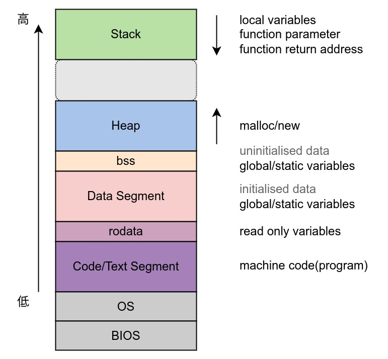

Ch02-C++ 之 内存模型
April 20, 2022
内存模型就是一种语言它独特的管理者一套程序的机制，每种语言都有自己的一套程序机制。
| 内存分区 | 说明 |
|---|---|
| c 语言分区 | 栈、堆、静态全局变量区、常量区 |
| c++语言分区 | 栈、堆、自由存储区、全局/静态变量区、常量存储区 |
1. 内存模型 #

| 区域 | 英文 | 说明 |
|---|---|---|
| 栈区 | stack | 用来存储函数调用时的临时信息，如函数调用所传递的参数、函数的返回地址、函数的局部变量等。在程序运行时由编译器在需要的时候分配，在不需要的时候自动清除。栈内存的申请和释放遵循 LIFO(先进后出)。 |
| 堆区 | heap | 堆的大小并不固定，可动态扩张或缩减。其分配由 malloc()、new() 等这类实时内存分配函数来实现。 |
| bss | 存放未初始化的全局或静态变量。 | |
| 数据段 | Data Segment | 存放已初始化的全局或静态变量。 |
| rodata | 存放着只读数据。 | |
| 代码段 | Code/Text Segment | 存放着程序的机器码，可执行指令就是从这里取得的。 |
- data 和 bss 会在同一个区内，称为全局区，可读可写
- rodata 和 text 在同一个区内，称为常量区，只能读，不能写
任何对常量区的写操作都会导致段错误（Segmentation Fault）